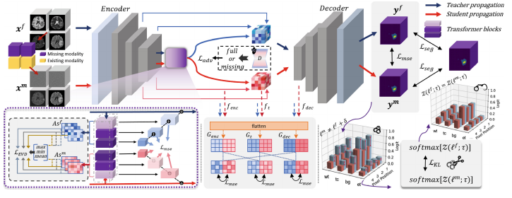
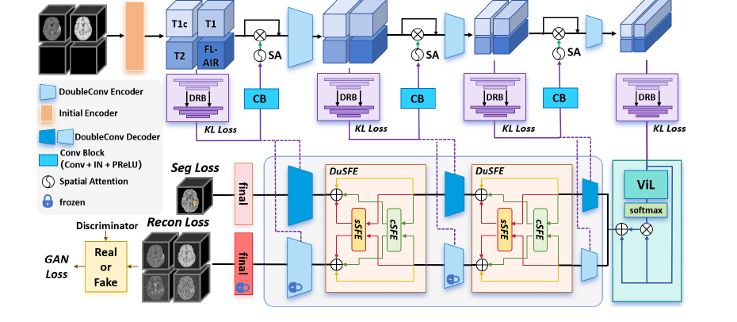
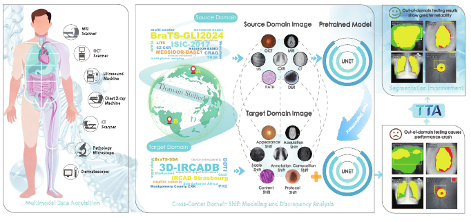
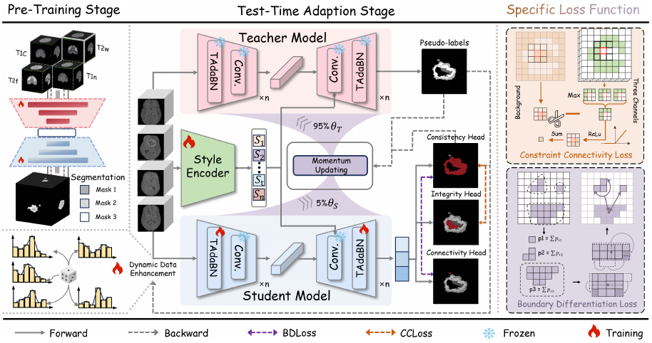

2026
GLeVE: Graph-Guided Lesion Grounding with Proposal Verification in 3D CT
MICCAI 2026
Early AcceptPosterShortlisted for the MICCAI 2026 Best Paper & Young Scientist awards (Top 0.5%).

MICCAI 2026
IEEE Journal of Biomedical and Health Informatics · Early Access · 2026.08

CVPR 2026

IEEE Journal of Biomedical and Health Informatics · Early Access · 2026.06

Medical Image Analysis · Vol. 112, 104108 · 2026



IEEE ISBI 2025

arXiv:2512.02497 · 2025

arXiv:2509.17925 · 2025

Publication list from Google Scholar and project repositories; publication status updated in October 2026.